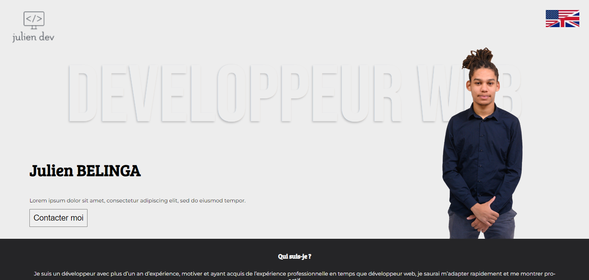

<div>
    
    <div>
        <h1>Mon portfolio</h1>
        <p style="margin-bottom: 0; padding-bottom: 20px;">Pour ce projet il s'agit s'implement de mon Portfolio c'est le site sur lequel vous vous trouvez actuellement.</br></br>
            Les technologies utilisées pour ce projet sont: HTML, CSS, Javascript tout en respectant une approche "mobile-first".</br>
            J'ai également mis en place un déploiement continu depuis un dépôt Github.</p>
    </div>
</div>